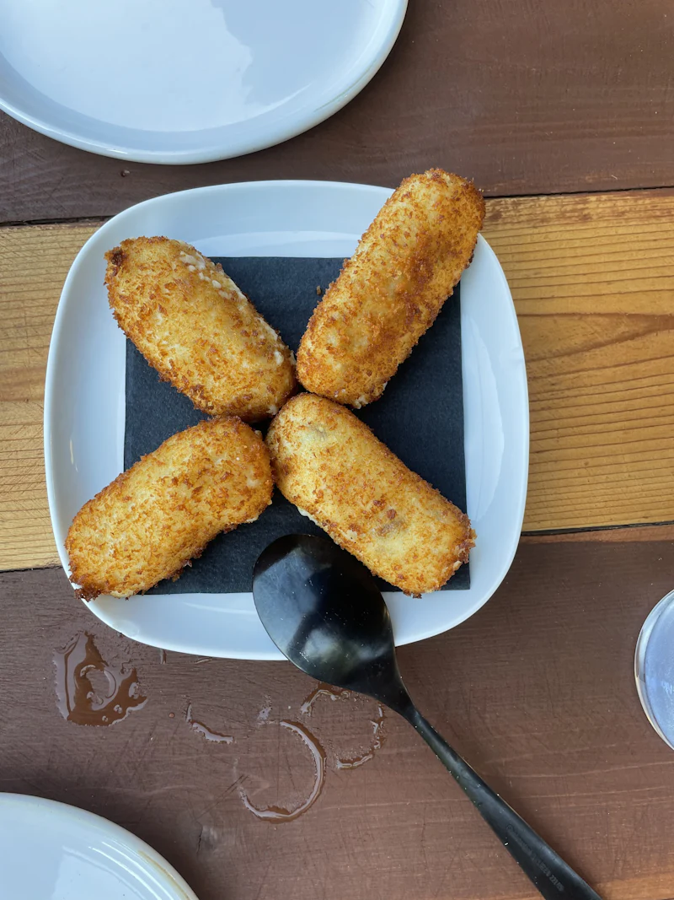
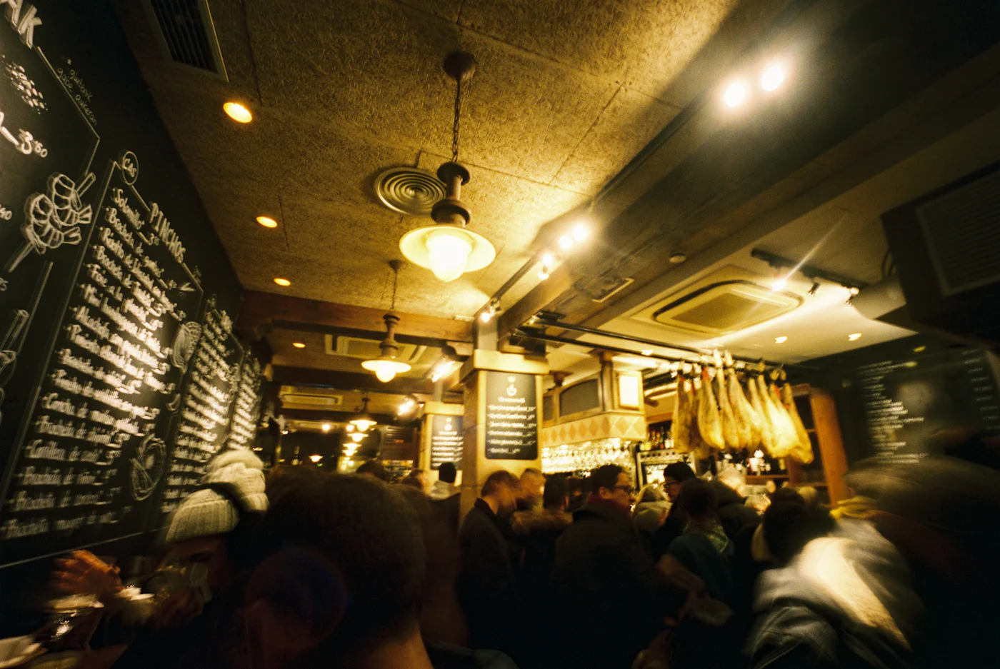
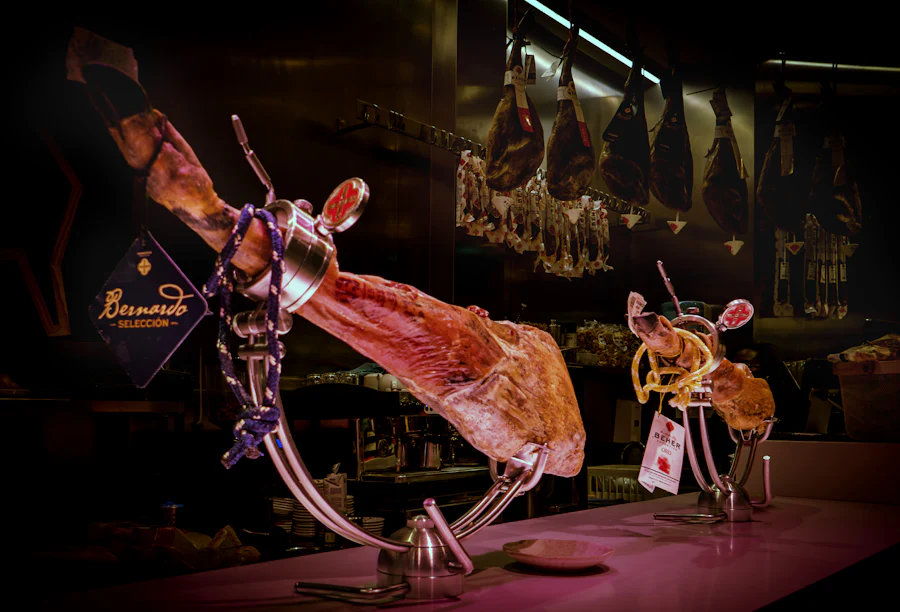
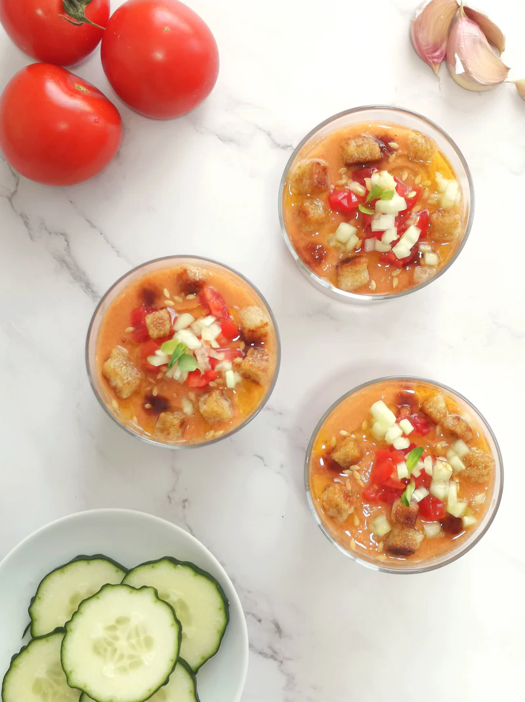
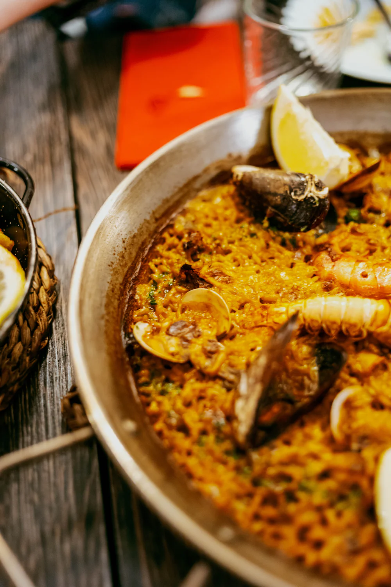
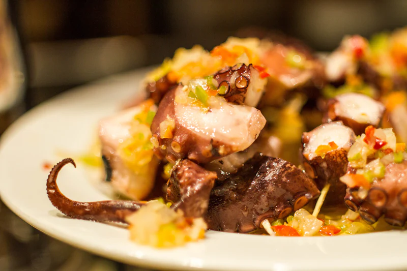
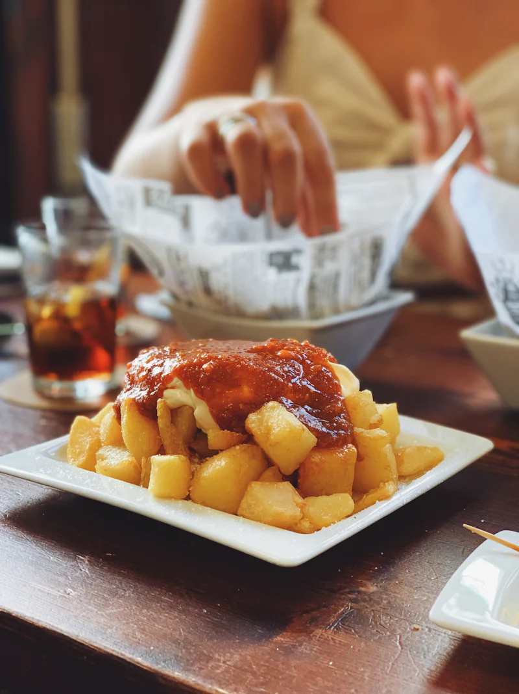
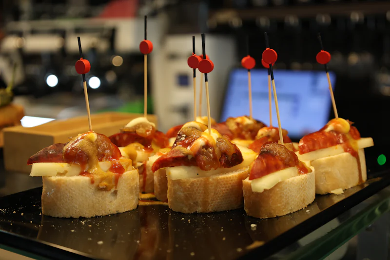

⭐ La favoritaCroquetas de puchero 9,50 €
Cremosas por dentro, crujientes por fuera. 6 unidades.
Taberna andaluza · Sevilla
Producto de mercado, recetas de la abuela y la mejor sobremesa del barrio. Te esperamos con la mesa puesta.


Nuestra casa
Desde 1987 servimos la cocina que nos enseñaron en casa: guisos a fuego lento, frituras crujientes y arroces que se comparten al centro de la mesa.
Los imprescindibles

⭐ La favoritaCremosas por dentro, crujientes por fuera. 6 unidades.

Con huevo, jamón y un buen chorro de aceite de la sierra.

Para 2Todo pelado, para disfrutar sin mancharse las manos.

Sobre cremoso de patata y pimentón de la Vera.

Nuestra salsa picante, receta secreta desde 1987.

Pringá, lomo en manteca, melva con piparra…
El ambiente
Lo que dicen de nosotros
“Las mejores croquetas que he probado en Sevilla. Y el trato, como estar en casa de tu abuela.”Lucía M. · Google
“El arroz del señorito merece el viaje. Pedimos dos y no sobró ni un grano.”Javier R. · TripAdvisor
“El patio en verano es una maravilla. Ideal para cenar con amigos sin prisa.”Marta G. · Google
Reserva en un minuto. Para grupos de más de 10, escríbenos y te preparamos un menú.
Hacer una reserva